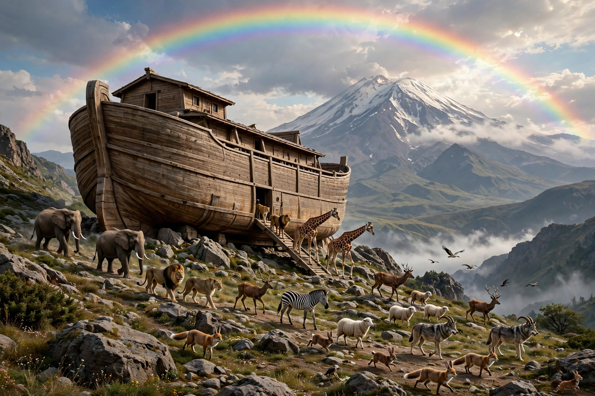

Noah
In Abrahamic religions, Noah (Hebrew: נֹחַ, Noach) appears as the last of the Antediluvian patriarchs in the traditions of Abrahamic religions. His story appears in the Hebrew Bible (Book of Genesis, chapters 5–9), the Quran and Baha'i writings. Noah is referenced in various other books of the Bible, including the New Testament, and in associated deuterocanonical books.

| Noah | |
|---|---|
| Venerated in | Judaism, Christianity, Islam, Mandaeism, Druze faith, Baháʼí Faith |
| Sons | Shem, Ham, Japheth |
| Father | Lamech |
| Age (Genesis) | 950 years |
The Flood narrative
The Genesis flood narrative tells that God, seeing the wickedness of humanity, resolved to destroy creation with a flood, but chose Noah — "a righteous man, blameless among the people of his time" — to survive. God instructed Noah to build an ark of gopher wood, sealed with pitch, and to bring aboard his family and pairs of every animal (in one strand of the text, seven pairs of clean animals). Rain fell for forty days and nights and the waters covered the earth; the ark came to rest on the mountains of Ararat. Noah sent out a raven and then a dove to test whether the waters had receded, and on leaving the ark he built an altar. God then made a covenant with Noah and all living creatures, setting the rainbow as its sign, and blessed Noah's sons Shem, Ham, and Japheth as the ancestors of all post-flood nations.
Parallels and later traditions
The Genesis account closely parallels earlier Mesopotamian flood stories: the Sumerian flood myth, the story of Atrahasis, and the flood tablet of the Epic of Gilgamesh, whose hero Utnapishtim survives a divinely sent deluge. The Assyriologist George Smith caused a sensation in 1872 when he published his translation of the Gilgamesh flood tablet. Later Genesis episodes include Noah's drunkenness and the curse of Canaan, and the Table of Nations in Genesis 10. In Islam, Nuh is a major prophet who preached to a disbelieving people before the flood. Jesus and the New Testament writers refer to Noah as an example of faith and of coming judgement.